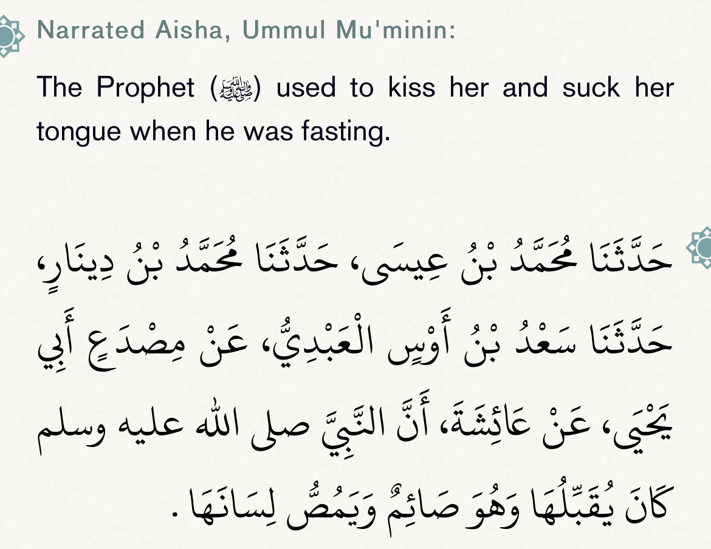
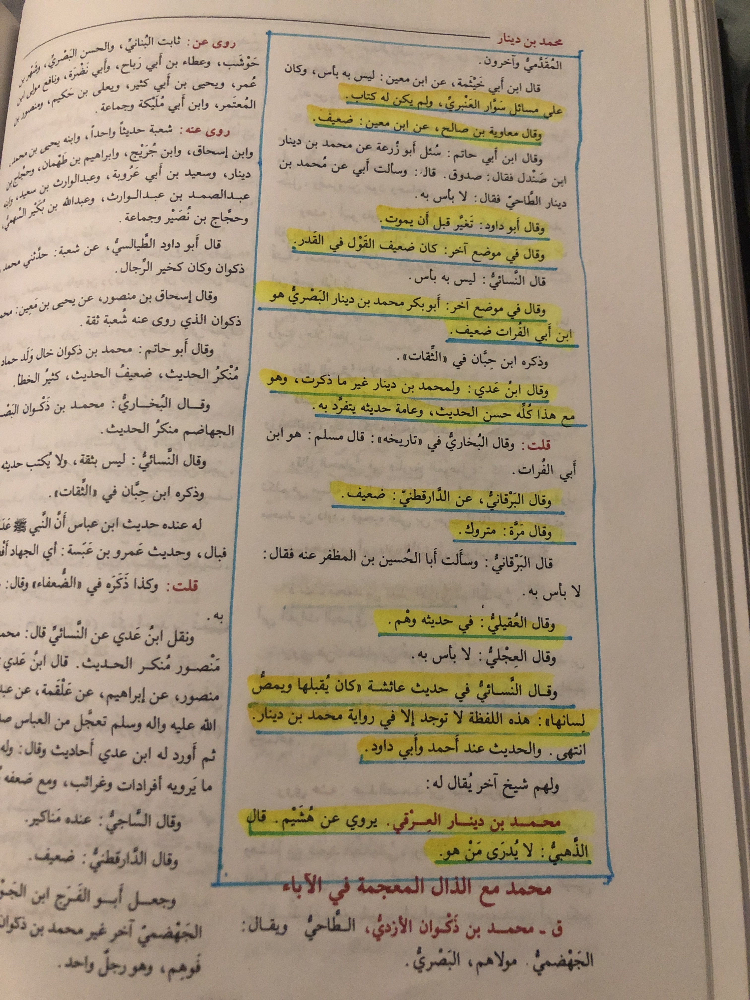
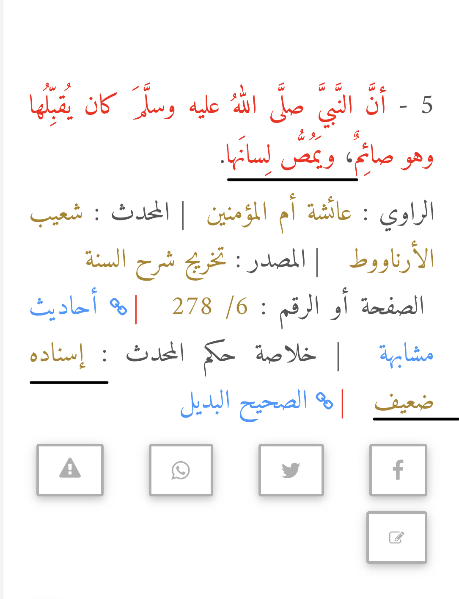
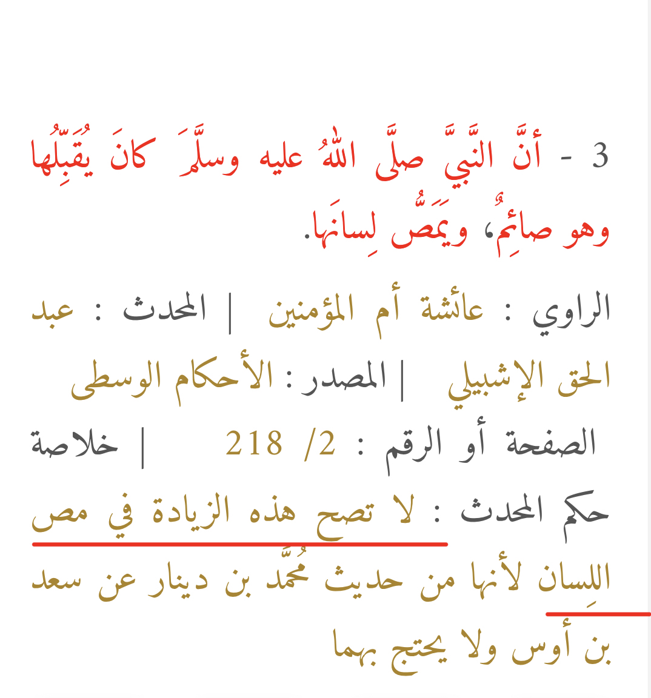
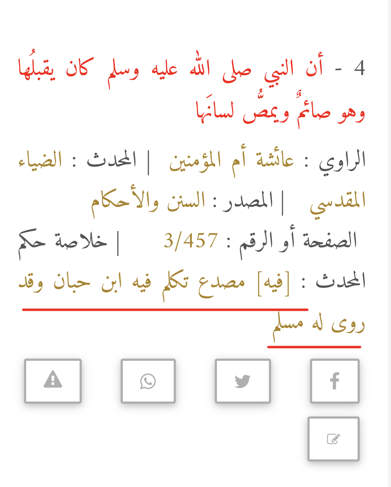

As you see here in tahzib āl-tahzib by ibn hajar he was weakned by a lot of people.
Al-nasa’i mentions this hadith and says it is an addition by him

The isnad is daif

The part of where it says “sucking” it’s addition to the hadith.

Summary ruling of the hadith: in it Sad bin Aws, Ibn Ma’in said: My eyesight is daif
